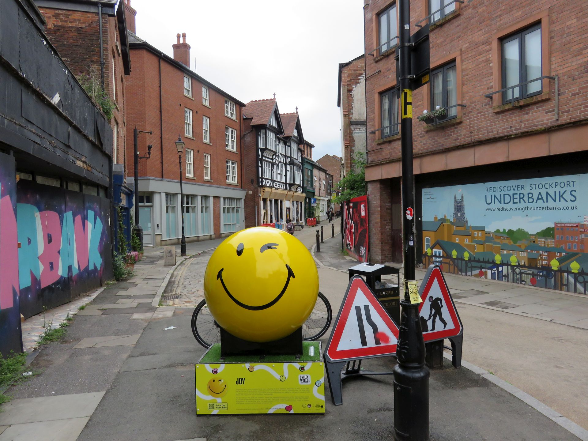

White Dragon Tattoo Studio, Lower Hillgate
19 Lower Hillgate, Stockport. Nine till half five, Monday to Saturday.
Monday to Saturday
Five things, all under the one roof on Lower Hillgate.
Big pieces, small pieces, and first ones.
If it isn’t right, it doesn’t have to stay.
Tattoos are for everyone nowadays.
Six spaces here for the shop’s own photographs. Nothing is in them yet, and we are not going to fill them with somebody else’s tattoos.
We’re not going to guess your price or your date on a website. Ring the shop, tell us what you’re after, and we’ll tell you where we stand.
We’re on the phone nine till half five, Monday to Saturday.
Send the details to whitedragonstockport@gmail.com, or ring 0161 477 2050, nine till half five, Monday to Saturday.
Down in the Underbanks, in Stockport’s old town. Talking About My Generation called us Stockport’s longest established tattoo shop when they came round in January 2023.

Street photograph: Gerald England, CC BY-SA 2.0, via Wikimedia Commons.
That’s our Google score as this page was written. The number moves. The link’s there so you can go and check it yourself.
Closed Sundays.